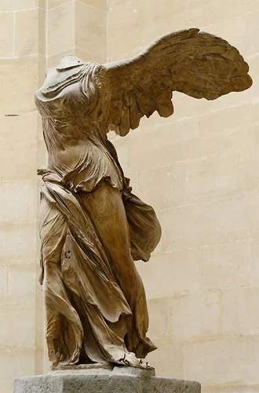
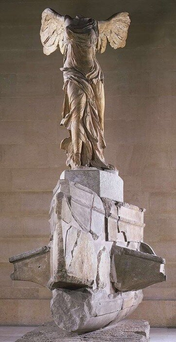
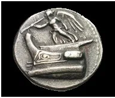
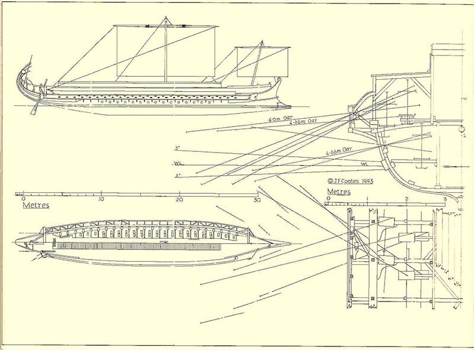

Тригемиолия Самофракийская
Не правда ли - примерам нет конца
Тому, как образ, в камне воплощённый,
Пленяет взор потомка восхищённый
И замыслом, и почерком резца?
Творенье может пережить творца:
Творец уйдёт, природой побеждённый,
Однако образ, им запечатлённый,
Веками будет согревать сердца.
Микеланджело Буонарроти (Пер. Е.Солоновича)
Ника Самофракийская… На мой взгляд, это лучшее творение, когда-либо созданное человеком из камня. Где-то к нему приблизился Роден, оставаясь однако, на почтительном расстоянии.

Но сейчас мы о другом. Этот памятник стал предметом изучения не только искусствоведов, но и морских историков. Конечно, знатоки морской истории вникают не в тонкости складок хитона на теле богини, а пытаются определить тип корабля, на носу которого размещена Ника.

На основе внешнего сходства Ники Самофракийской с изображениями на монетах, которые выпустил Деметрий I Полиоркет («Осаждающий города», «Градоимец») в честь победы при Саламине на Кипре в 306 г., долгое время считали, что и Ника Самофракийская представляет собой памятник, поставленный в Святилище Великих Богов на о. Самотраки в честь этой победы.

Логично тогда, что цоколь монумента представляет собой изображение флагманского корабля Деметрия, который, как известно, представлял собой гептеру (heptère , «семерка»). Однако постепенно исследователи, все точнее устанавливая отдельные детали конструкции корабля, снижали возраст монумента. В настоящее время практически единодушно признается, что памятник был воздвигнут между 200(дата обработки использованного для него мрамора) и 180 гг. до н.э. и был связан с морскими победами при острове Родос. Возможным автором признается знаменитый родосский скульптор Питокрит (Pythocritos).
Если мы сейчас примемся разбирать все возможные варианты, которые предлагались для интерпретации типа корабля, служащего пьедесталом богине, мы уйдем очень далеко от заявленной нами сейчас темы – история развития систем гребли на галерах. Поэтому опустим все промежуточные результаты, и остановимся на том, о чем мы, собственно, говорили в последнем посте. Сейчас большинство исследователей сошлось на том, что пьедестал Ники – это тригемиолия (trihemiolia, τριημιολία [ναῦς]). Первое упоминание этого корабля встречается в «Исторической библиотеке» Диодора Сицилийского (Кн.ХХ, 93.3):
Μενέδημος δὲ τριῶν ἀφηγούμενος τριημιολιῶν πλεύσας τῆς Λυκίας ἐπὶ τὰ Πάταρα
(«Менедем, который командовал тремя легкими тригемиолиями, отплыл в Патру, в Ликию.»)
Тригемиолии были основным типом кораблей родосского флота, они были разработаны для противодействия пиратским гемиолиям, о которых мы говорили выше. Считается, что тригемиолии были триремами, два верхних яруса весел которых находились в «весельном ящике», а нижний «полуярус» был расположен на позициях таламитов классических галер, но не на всю длину корабля, а только в наиболее широкой его части. Для любителей разобраться со всеми деталями подробно, приведу реконструкцию корабля, послужившего пьедесталом великому творению, принадлежащую J.F. Coates (1993).
